第1章 目的Chapter 1 — PurposePURPOSE
1.1 本システムの目的1.1 Purpose of the System
本システムの目的は、最先端のリモート運用による総合無線システムの実証実験である。その概要は、200W HF固定無線局を神奈川県大磯に設置し、東京日本橋のマンション15階より遠隔操作で運用する。その、交信記録（ログ）をクラウド上で一元管理し、必要情報が瞬時に描画される最先端のシステムの実現である。 The purpose of this system is a proof-of-concept of a state-of-the-art integrated radio station operated entirely by remote control. A 200W HF fixed station is installed in Oiso, Kanagawa, and is operated remotely from the 15th floor of a residence in Nihonbashi, Tokyo. All QSO records (logs) are managed centrally in the cloud, with the information the operator needs rendered instantly.
本システムを、大磯固定基地局（Oiso Base Station：OBS）と東京リモート局（Tokyo Remote Station：TRS）と呼ぶ。 The two sites are called the Oiso Base Station (OBS) and the Tokyo Remote Station (TRS).
1.2 システム構築の経緯1.2 Background
ICOM『IC-7760』を新規購入し、神奈川県大磯の自宅に設置した。自宅の敷地は決して広くはないが、HFアンテナの設置が可能であり、3.5MHzフルサイズダイポール、7MHzフルサイズダイポール、14MHz 2エレ八木、そして3.5〜50MHz対応のCPATUの4基のアンテナを設置した。ここまでは従来通りのアマチュア無線局である。 A new ICOM IC-7760 was purchased and installed at the author's home in Oiso, Kanagawa. The lot is by no means large, but it can accommodate HF antennas: four were erected — a full-size dipole for 3.5 MHz, a full-size dipole for 7 MHz, a 2-element Yagi for 14 MHz, and a CPATU covering 3.5–50 MHz. Up to this point it was a conventional amateur radio station.
ところが、私の生活と仕事の拠点は、東京都日本橋である。都心のマンションから、大型アンテナによる200W運用――この夢が、IC-7760の遠隔操作で実現した。IC-7760の操作部を東京都日本橋に設置し、神奈川県大磯とのVPN接続により、想像を超える快適な遠隔操作環境ができあがった。 However, the author's life and work are based in Nihonbashi, Tokyo. Operating 200 watts into large antennas from a downtown high-rise — that dream came true through remote control of the IC-7760. With the IC-7760's control head installed in Nihonbashi and a VPN link to Oiso, a remote-operating environment more comfortable than imagined was completed.
何のタイムラグもなく、リモート操作の大成功である。CW、SSB、FT8――すべての運用は何の問題もない。ところが、ログシステムには困った。HAMLOGを持ち歩くのも面倒であり、無線機との接続にも問題がある。クラウド型のログソフトにはサーバー設置の障壁が立ちはだかったが、ChatGPTを相手に構想を練り、さくらVPSを使ってクラウドサーバーを独自構築した。プログラム作成と実装は、Claude Codeが担当した。 With no perceptible latency, the remote operation was a complete success — CW, SSB and FT8 all work flawlessly. Logging, however, was a headache. Carrying HAMLOG around was cumbersome and connecting it to the rig was problematic. Cloud logging software faced the hurdle of standing up a server, but the author refined the concept in dialogue with ChatGPT and built a private cloud server on Sakura VPS. Programming and implementation were handled by Claude Code.
ログは、クラウド型のWavelogを導入し、LoTW・eQSL・QRZ.comなどを自動連携。HAMLOGも自動連携し、JARL情報にも対応した。 For logging, cloud-based Wavelog was adopted, with automatic links to LoTW, eQSL and QRZ.com. HAMLOG is synchronized automatically as well, covering JARL-related workflows.
1.3 設計方針1.3 Design Principles
本システムは、RF設備（送受信・アンテナ郡）は大磯固定基地局（OBS）へ集約し、東京リモート局（TRS）は運営・操作のみを担当する。 All RF equipment (transceiver and antenna farm) is concentrated at the Oiso Base Station (OBS); the Tokyo Remote Station (TRS) is responsible solely for operation and control.
- 大磯固定基地局を本システムの常設基地局（固定局200W）とし、無人運転可能な自動復帰システムを持つThe Oiso Base Station is the permanent base (200W fixed station), equipped with an auto-recovery system for unattended operation
- Wavelogを正本（唯一のマスターログ／Single Source of Truth）とするWavelog is the master log — the Single Source of Truth
- HAMLOGはWavelogの副本とし、Wavelogから自動同期し、JARL情報・紙QSL等の国内運用を担うHAMLOG is a replica of Wavelog, synced automatically, handling domestic work such as JARL data and paper QSLs
- LoTW・eQSL・QRZ.comはWavelogから直接連携する（HAMLOGを経由しない）LoTW, eQSL and QRZ.com are fed directly from Wavelog (never via HAMLOG)
- FT8は自動ログ登録、CW・SSBはログ手入力FT8 QSOs are logged automatically; CW and SSB are entered manually
1.4 システム全体像1.4 System Overview
遠隔操作無線システムは、以下の4システムで構成する。The remote-controlled radio system consists of the following four subsystems.
| システムSubsystem | 役割Role |
|---|---|
| 大磯固定基地局（OBS）Oiso Base Station (OBS) | RF送信基地・バックアップ基地RF transmission base / backup base |
| 東京リモート局（TRS）Tokyo Remote Station (TRS) | メインリモート運営基地Main remote operating base |
| さくらVPSSakura VPS (cloud) | WavelogマスターサーバーWavelog master server |
| ThinkPad X13 | HAMLOG・JARL専用端末Dedicated HAMLOG / JARL terminal |
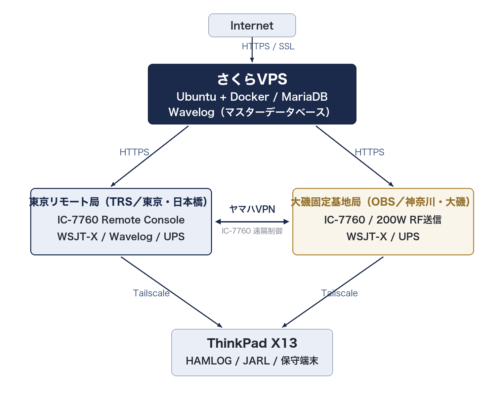
第2章 大磯固定基地局（Oiso Base Station : OBS）Chapter 2 — Oiso Base Station (OBS)OISO BASE STATION
2.1 役割2.1 Role
大磯固定基地局（OBS）は本システム唯一のRF送信基地であり、神奈川県大磯に設置した200W常設無線局である。実際の電波送信はすべて大磯固定基地局から行われる。 The Oiso Base Station (OBS) is the system's only RF transmission base — a permanent 200W station in Oiso, Kanagawa. Every actual transmission originates here.
- RF送信基地（200W）RF transmission base (200W)
- IC-7760本体設置Hosts the IC-7760 RF deck
- アンテナ設備Antenna facilities
- バックアップ運用基地Backup operating base
- 自動復帰システムによる無人運転Unattended operation via auto-recovery system
- UPS電源保護UPS power protection
2.2 設置場所2.2 Location
神奈川県中郡大磯町（Grid Locator：PM95RM ／ JCG：11006B）。200W固定局（移動しない）として神奈川県中郡大磯町に免許された常設無線局である。 Oiso-machi, Naka-gun, Kanagawa (Grid Locator PM95RM / JCG 11006B). Licensed as a 200W fixed (non-mobile) station in Oiso, Kanagawa.
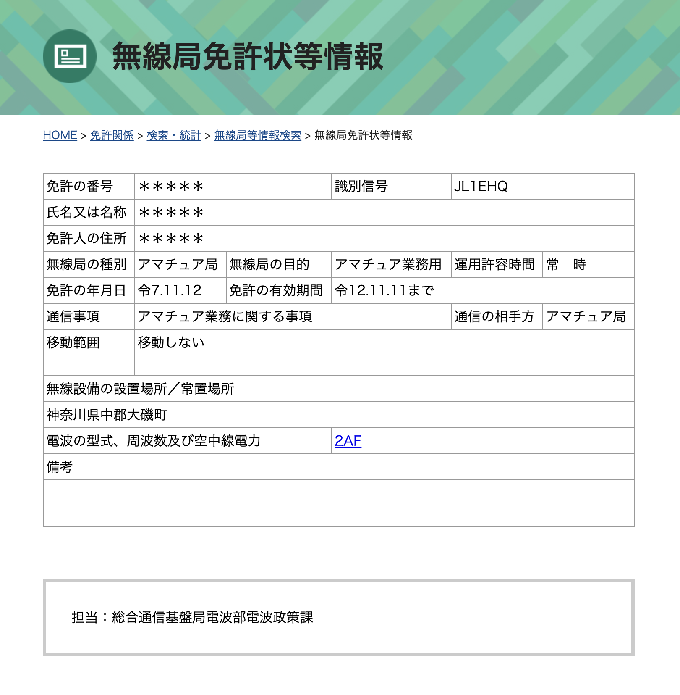
2.3 無線機2.3 Transceiver
| 項目Item | 内容Details |
|---|---|
| 無線機Transceiver | ICOM IC-7760 |
| 最大送信出力Max output | 200W |
| 運用周波数Frequency range | 3.5MHz〜50MHz |
| 運用モードModes | FT8 ／ CW ／ SSB |
運用バンド：3.5／7／10／14／18／21／24／28／50MHzOperating bands: 3.5 / 7 / 10 / 14 / 18 / 21 / 24 / 28 / 50 MHz
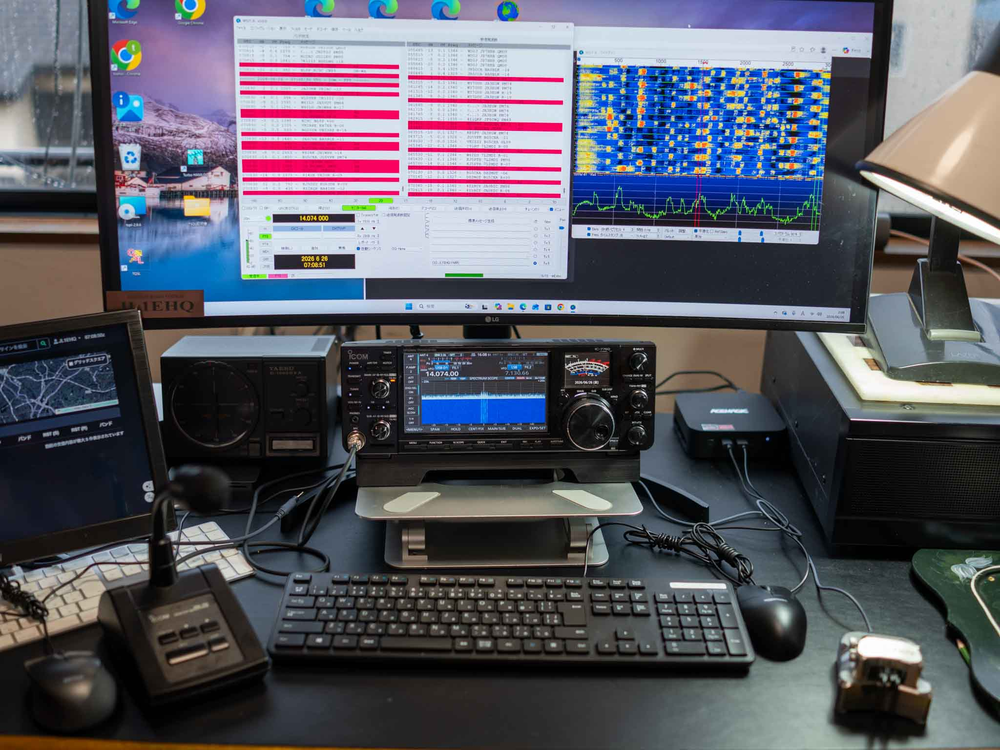
2.4 アンテナ設備2.4 Antenna Facilities
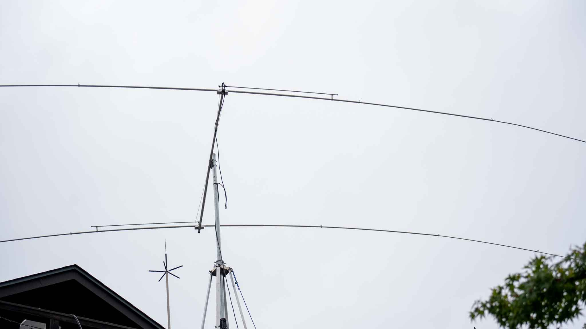
専用アンテナDedicated antennas
| バンドBand | アンテナAntenna | 最大送信出力Max power |
|---|---|---|
| 3.5MHz | フルサイズダイポールFull-size dipole | 200W |
| 7MHz | フルサイズダイポールFull-size dipole | 200W |
| 14MHz | 2エレメント八木2-element Yagi | 200W |
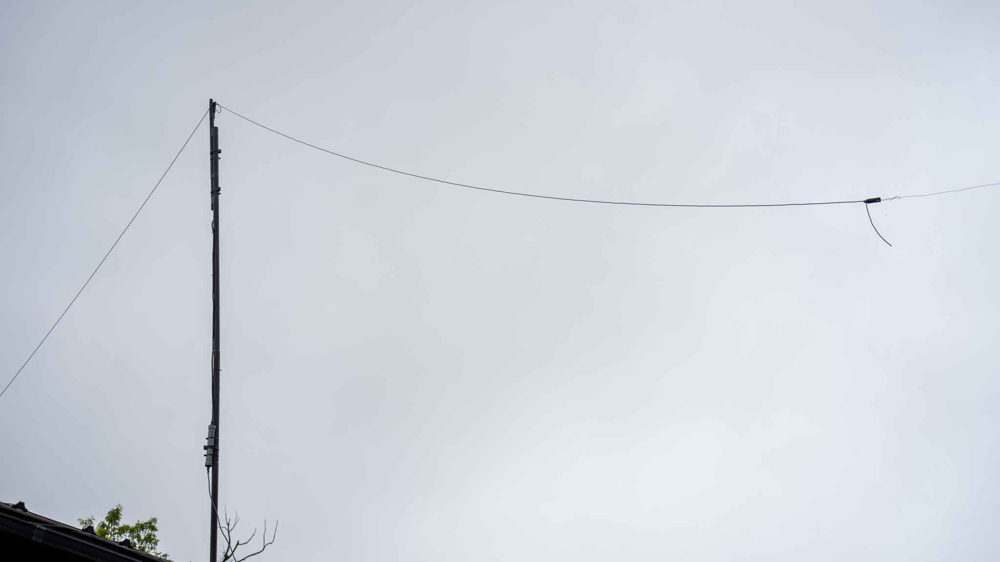
CPATU（全バンド対応補助アンテナ） — 本システムの全バンド対応補助アンテナシステムとする。対応バンドは3.5／7／10／14／18／21／24／28／50MHz、最大送信出力は100W。 CPATU (all-band auxiliary antenna) — the system's all-band auxiliary antenna, covering 3.5 / 7 / 10 / 14 / 18 / 21 / 24 / 28 / 50 MHz with a maximum power of 100W.
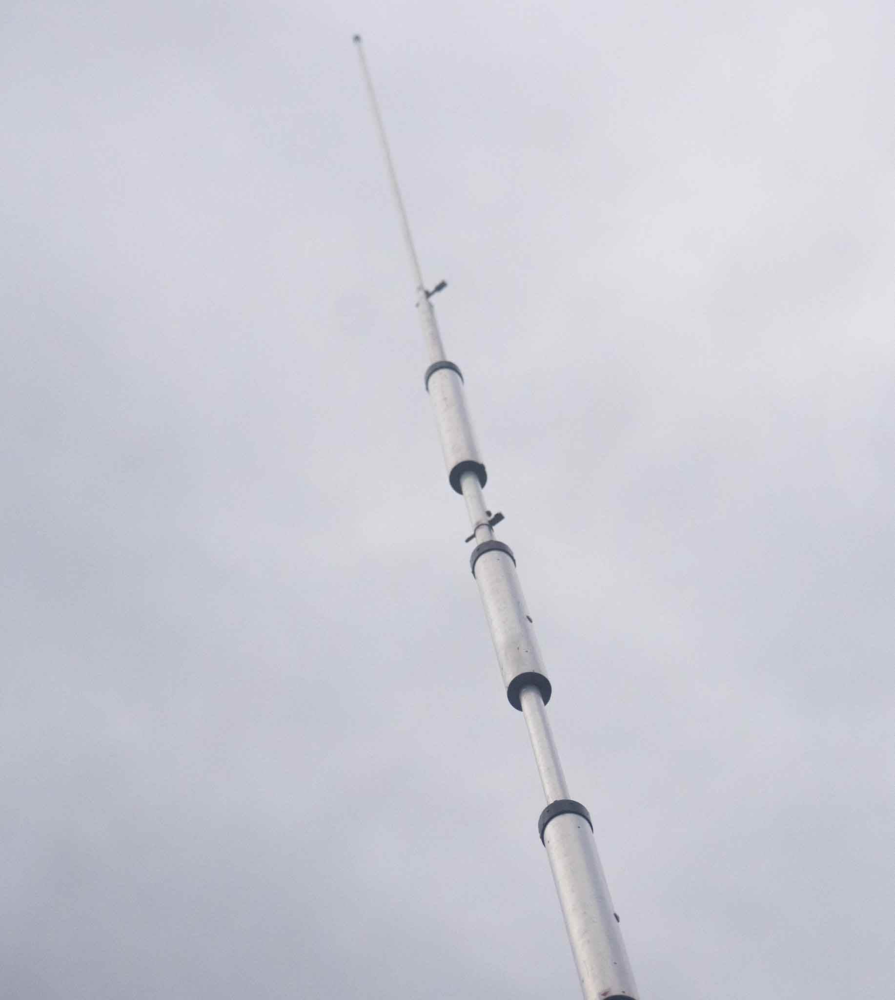
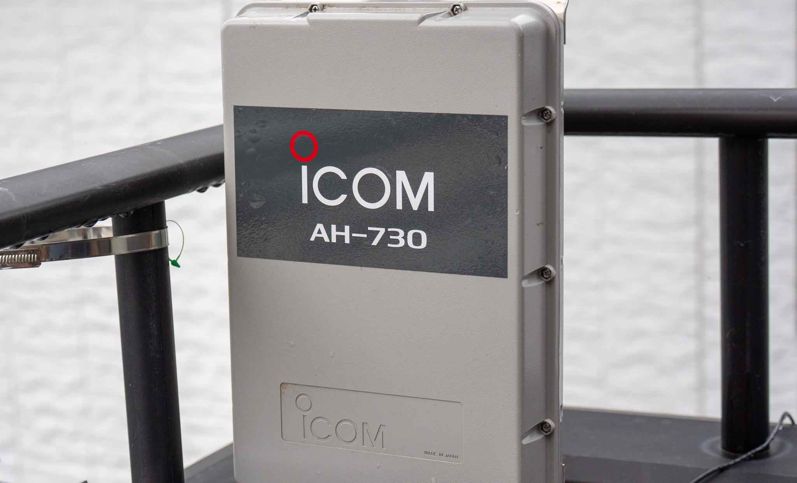
アンテナ運用方針 — 通常は専用アンテナを優先使用する。専用アンテナが存在しないバンド、または補助運用時はCPATUを使用する。 Antenna policy — dedicated antennas take priority. The CPATU is used on bands without a dedicated antenna, or for auxiliary operation.
2.5 RFノイズ・TVI対策2.5 RF Noise / TVI Countermeasures
大磯固定基地局は200W送信設備として、高いEMC性能を確保する。コモンモードフィルターを以下の2か所へ設置する。 As a 200W transmitting facility, the Oiso Base Station maintains high EMC performance. Common-mode filters are installed at two points:
- アンテナ給電点直下：コモンモード電流低減、アンテナ性能安定化Directly below the antenna feed point — reduces common-mode current and stabilizes antenna performance
- IC-7760アンテナ入力直前：RF回り込み防止、TVI対策、BCI対策、同軸外皮電流低減Just before the IC-7760 antenna input — prevents RF ingress, TVI and BCI, and reduces coax shield current
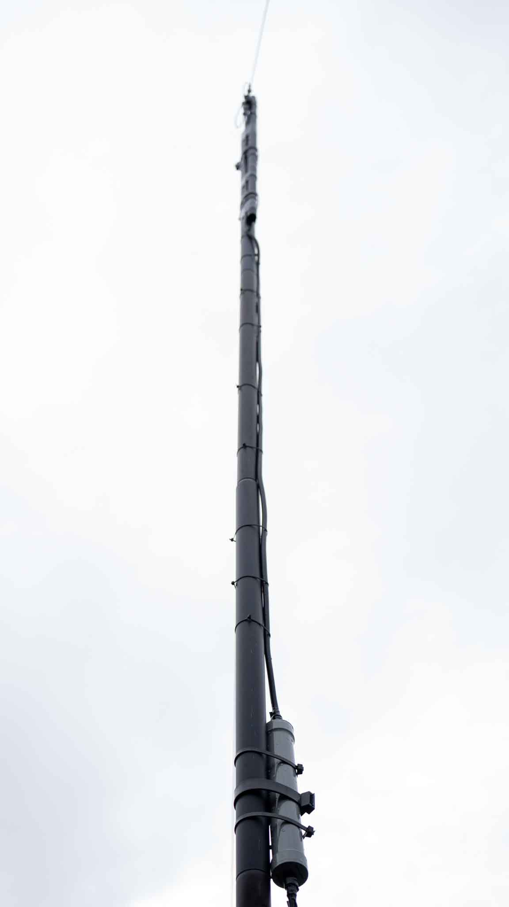
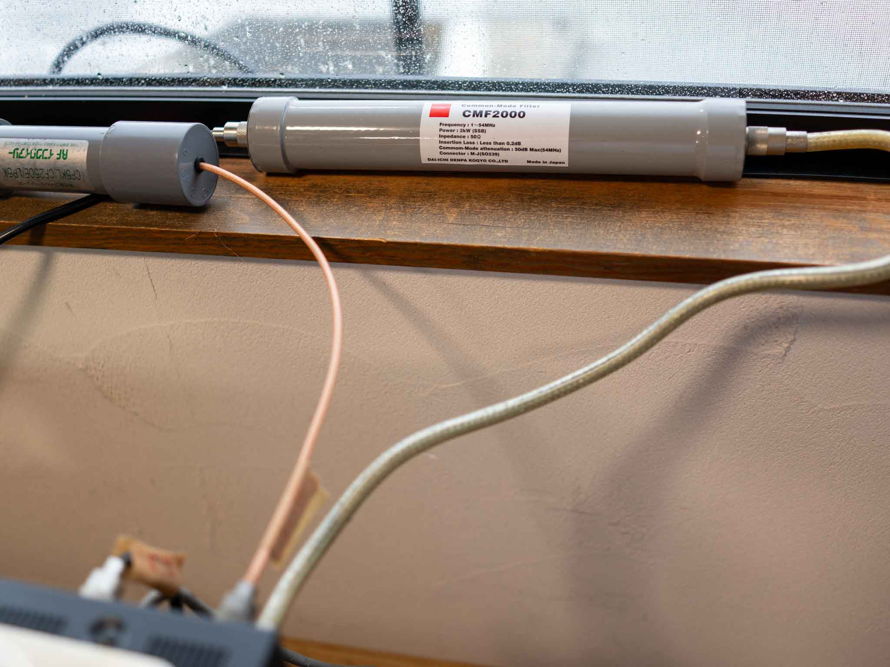
2.6 コンピュータ2.6 Computer
Windows Desktopを1台設置する。無線機（IC-7760操作部）とはUSBで接続する（詳細は第5章）。インストールソフトは第6章に示す。 One Windows desktop PC is installed, connected to the IC-7760 control head via USB (details in Chapter 5). Installed software is listed in Chapter 6.
2.7 電源設備・自動復帰システム2.7 Power & Auto-Recovery System
大磯固定基地局はUPSによる電源バックアップを行い（停電・瞬停対策、安定運用、自動復帰システム保護）、24時間無人運転を可能とする自動復帰システムを実装する。 The Oiso Base Station is protected by a UPS (against outages and momentary drops, for stable operation and to protect the auto-recovery system), and implements an auto-recovery system enabling 24-hour unattended operation.
自動復帰システムの機能Auto-recovery functions
- 停電復旧後の自動起動Automatic start-up after power restoration
- Windows自動ログインAutomatic Windows login
- ネットワーク自動復旧Automatic network recovery
- WSJT-X等の必要ソフト自動起動Automatic launch of required software such as WSJT-X
- Wavelog接続確認Wavelog connectivity check
- 遠隔運用可能状態への自動復帰Automatic return to remote-operable state
第3章 東京リモート局（Tokyo Remote Station : TRS）Chapter 3 — Tokyo Remote Station (TRS)TOKYO REMOTE STATION
3.1 役割3.1 Role
東京リモート局（TRS）は本システムのメイン運営基地である。東京都中央区日本橋マンション15階に設置し、大磯固定基地局のIC-7760を遠隔運用する。RF送信設備は持たず、送信地点は常に大磯固定基地局（OBS）である。 The Tokyo Remote Station (TRS) is the system's main operating base, located on the 15th floor of a residence in Nihonbashi, Chuo-ku, Tokyo, remotely operating the IC-7760 at Oiso. It has no RF transmission equipment; the transmitting site is always the Oiso Base Station.
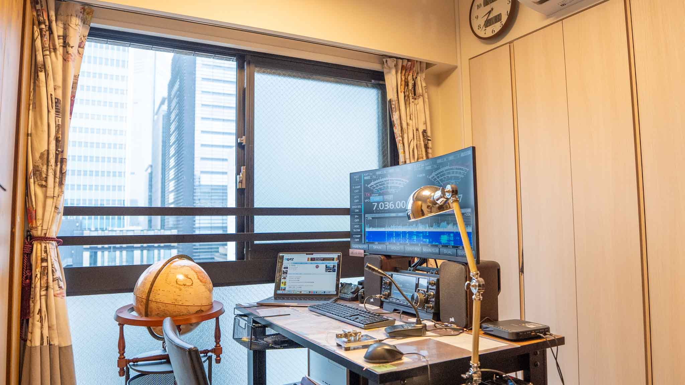
3.2 構成3.2 Configuration
東京リモート局は、大磯固定基地局と同じ構成（無線機操作部・PC・周辺機器）を備える。RF送信設備を持たない点のみが異なる。 The TRS mirrors the OBS configuration (rig control head, PC, peripherals); the only difference is the absence of RF transmission equipment.
- IC-7760 リモートコンソール（操作部）IC-7760 remote console (control head)
- Windows Desktop
- UPS
- 周辺機器Peripherals
無線機とPCの接続は大磯固定基地局と同一構成（第5章）である。インストールソフトは第6章に示す。 Rig-to-PC connections are identical to the OBS (Chapter 5); installed software is listed in Chapter 6.
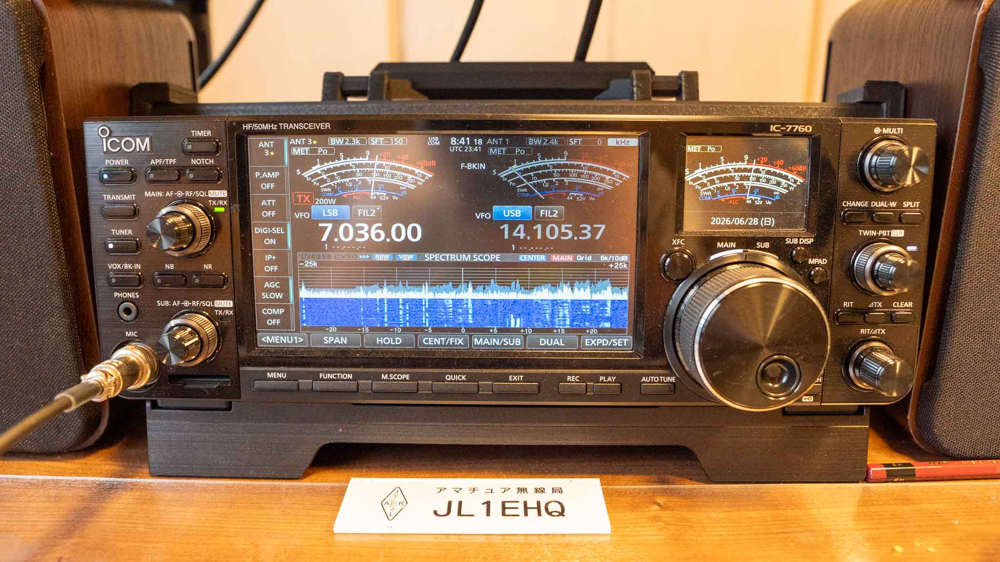
3.3 運用3.3 Operation
東京リモート局から大磯固定基地局のIC-7760を直接遠隔運用する。FT8デコードおよび運用は東京リモート局でも実施できる。送信地点は大磯固定基地局であり、LoTWのStation Locationは『JL1EHQ_Oiso』を使用する。 The TRS directly operates the OBS's IC-7760. FT8 decoding and operation can also be performed at the TRS. Since the transmitting site is Oiso, the LoTW Station Location "JL1EHQ_Oiso" is used.
第4章 ネットワーク構成Chapter 4 — Network ArchitectureNETWORK
4.1 基本構成4.1 Basic Structure
本システムは、以下の4拠点をネットワークで結ぶ。The system links the following four nodes:
- 大磯固定基地局（OBS）Oiso Base Station (OBS)
- 東京リモート局（TRS）Tokyo Remote Station (TRS)
- さくらVPS（クラウド）Sakura VPS (cloud)
- ThinkPad X13
通信方式はHTTPS・ヤマハVPN・Tailscaleの3系統とし、用途を明確に分離する。 Three communication planes — HTTPS, Yamaha VPN and Tailscale — are kept strictly separated by purpose.
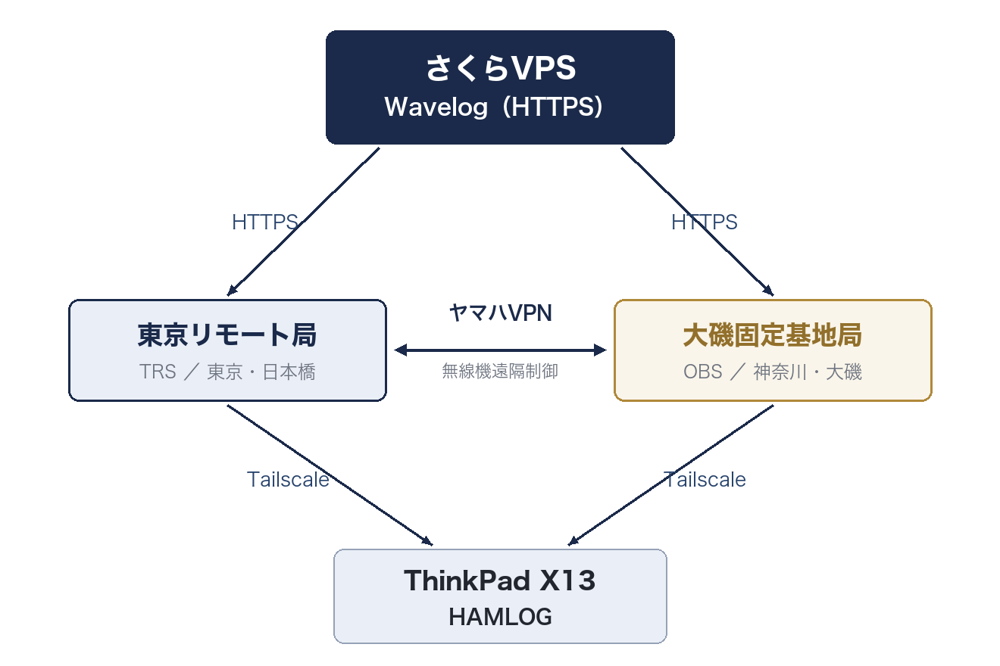
4.2 ヤマハVPN4.2 Yamaha VPN
ヤマハVPNは、大磯固定基地局と東京リモート局間のIC-7760遠隔制御専用ネットワークとする。 The Yamaha VPN is a dedicated network between the OBS and TRS exclusively for IC-7760 remote control.
用途Uses
- IC-7760 リモートコンソールIC-7760 remote console
- CAT制御・Audio伝送CAT control and audio transport
- RF運用RF operation
- 両局間の低遅延・高信頼性通信Low-latency, high-reliability communication between the two sites
4.3 クラウド（さくらVPS）4.3 Cloud (Sakura VPS)
さくらVPSは、本システム全体のクラウド基盤であり、すべてのログ管理を一元化する中核システムである。大磯固定基地局・東京リモート局からはHTTPSでさくらVPS上のWavelogへアクセスする。 Sakura VPS is the cloud foundation of the entire system — the core that centralizes all log management. Both the OBS and TRS access Wavelog on the VPS over HTTPS.
| 項目Item | 内容Details |
|---|---|
| OS | Ubuntu LTS |
| 仮想化Containers | Docker |
| データベースDatabase | MariaDB |
| ログシステムLogging system | Wavelog |
| サーバーURLServer URL | （セキュリティのため非公開）(withheld for security) |
4.4 Tailscale4.4 Tailscale
Tailscaleは、ThinkPad X13への管理系リモートアクセス専用とする。 Tailscale is reserved for administrative remote access to the ThinkPad X13.
用途Uses
- HAMLOG閲覧・保守Viewing and maintaining HAMLOG
- JARL関連処理確認Checking JARL-related processing
- ThinkPad X13メンテナンスThinkPad X13 maintenance
Tailscaleは無線機遠隔制御には使用しない。無線機遠隔制御はヤマハVPNが担う。 Tailscale is never used for rig control — that is the Yamaha VPN's role.
第5章 無線機接続構成Chapter 5 — Transceiver ConnectionsCONNECTIONS
5.1 基本5.1 Basics
IC-7760（操作部）とWindows PCは、2系統のUSB接続で結ぶ。大磯固定基地局・東京リモート局とも同一の接続構成をとり、各拠点の無線機操作盤から、それぞれのWindows PCへ独立して接続する（大磯は大磯のPCへ、東京は東京のPCへ）。 The IC-7760 control head and the Windows PC are linked by two USB connections. Both sites use the identical configuration, each control head connecting independently to its local PC (Oiso to the Oiso PC, Tokyo to the Tokyo PC).
- USB Audio … FT8・CW等のデコード用音声を伝送する（受信音をPCへ、送信音をPCから無線機へ）。WSJT-X等のデジタル通信に用いる。USB Audio — carries audio for FT8/CW decoding (RX audio to the PC, TX audio from the PC to the rig); used by WSJT-X and other digital modes.
- USB CAT（CI-V） … 周波数・モードの取得とPTT（送信）制御を行う。取得した周波数・モードはWavelogへ自動入力される。USB CAT (CI-V) — reads frequency and mode and controls PTT; the captured frequency/mode is entered into Wavelog automatically.
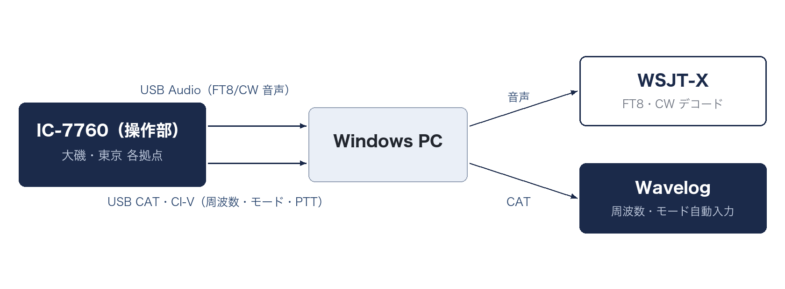
5.2 接続一覧5.2 Connection List
| 接続Connection | 信号Signal | 用途Purpose |
|---|---|---|
| USB Audio | 送受信音声TX/RX audio | FT8・CW等のデコード／変調（WSJT-X）Decoding / modulation of FT8, CW etc. (WSJT-X) |
| USB CAT（CI-V） | 周波数・モード・PTTFrequency, mode, PTT | 周波数／モード取得・送信制御・Wavelog自動入力Frequency/mode capture, TX control, automatic Wavelog entry |
大磯固定基地局・東京リモート局は同一の接続構成をとり、各拠点の無線機操作盤からそれぞれのWindows PCへ接続する。 The OBS and TRS share the identical configuration, each control head connecting to its own Windows PC.
第6章 ソフト構成Chapter 6 — SoftwareSOFTWARE
6.1 ソフトウェア分類6.1 Software Categories
| 分類Category | ソフトウェアSoftware |
|---|---|
| デジタル通信Digital modes | WSJT-X, CW Skimmer |
| ログ管理Logging | Wavelog, HAMLOG |
| QSL連携QSL integration | TQSL, LoTW, eQSL, QRZ.com XML |
| 無線機制御Rig control | IC-7760 リモートコンソールIC-7760 Remote Console |
| 遠隔接続Remote connectivity | ヤマハVPN、TailscaleYamaha VPN, Tailscale |
6.2 大磯固定基地局6.2 Oiso Base Station
| ソフトウェアSoftware | 用途Purpose |
|---|---|
| WSJT-X | FT8運用FT8 operation |
| CW Skimmer | CWデコード・CW運用支援CW decoding and operating aid |
| Wavelog | ログ管理Log management |
| TQSL | LoTWアップロードLoTW upload |
| eQSL | eQSL送受信eQSL send/receive |
| QRZ.com XML | コールサイン検索Callsign lookup |
6.3 東京リモート局6.3 Tokyo Remote Station
| ソフトウェアSoftware | 用途Purpose |
|---|---|
| IC-7760 リモートコンソールIC-7760 Remote Console | IC-7760制御IC-7760 control |
| WSJT-X | FT8運用FT8 operation |
| CW Skimmer | CWデコード・CW運用支援CW decoding and operating aid |
| Wavelog | ログ管理Log management |
| TQSL | LoTWアップロードLoTW upload |
| eQSL | eQSL送受信eQSL send/receive |
| QRZ.com XML | コールサイン検索Callsign lookup |
6.4 ThinkPad X136.4 ThinkPad X13
| ソフトウェアSoftware | 用途Purpose |
|---|---|
| HAMLOG | 国内ログDomestic logging |
| JARL関連ソフトJARL-related software | QSL管理・JARL処理QSL management and JARL processing |
第7章 ログ管理Chapter 7 — Log ManagementLOG MANAGEMENT
7.1 基本方針7.1 Policy
本システムでは、Wavelogを正本（唯一のマスターログ／Single Source of Truth）とする。LoTW・eQSL・QRZ.comとは、Wavelogから直接連携する（HAMLOGを経由しない）。HAMLOGはWavelogの副本であり、Wavelogから自動同期され、JARL情報・紙QSL等の国内運用を担う。 Wavelog is the master log — the Single Source of Truth. LoTW, eQSL and QRZ.com are fed directly from Wavelog (never via HAMLOG). HAMLOG is a replica, synced automatically from Wavelog, handling domestic work such as JARL data and paper QSLs.
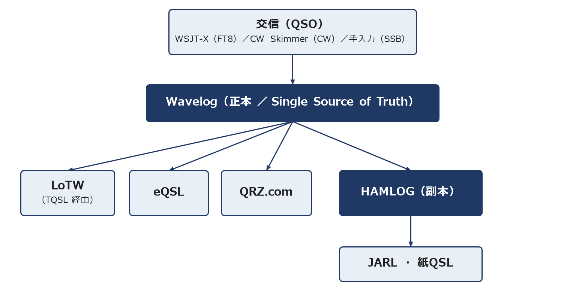
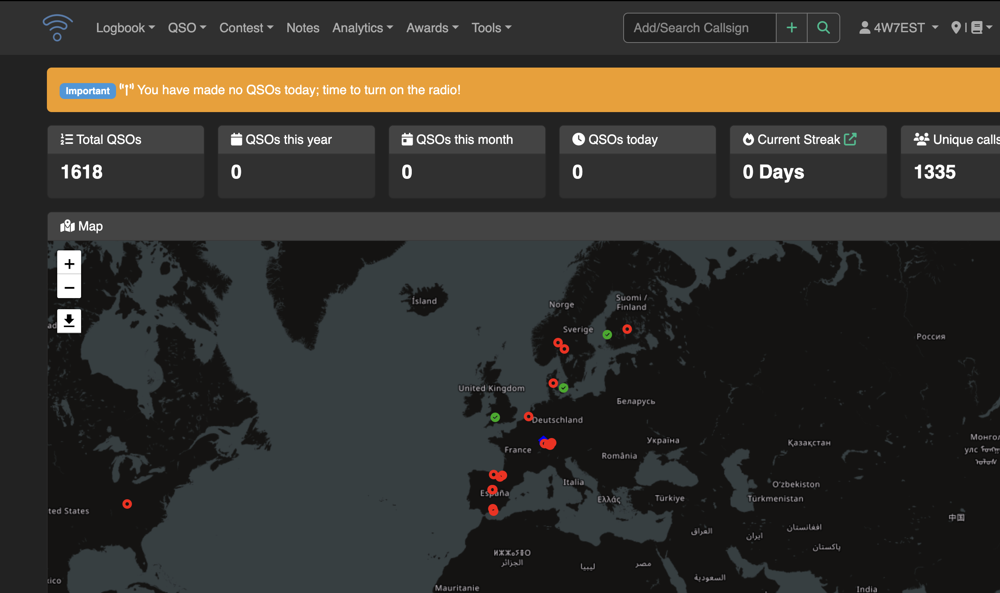
7.2 モード別のログ登録7.2 Logging by Mode
| モードMode | 登録方法Entry method | 連携Integration |
|---|---|---|
| FT8 | 完全自動登録（WSJT-X → Wavelog）Fully automatic (WSJT-X → Wavelog) | Wavelogから直接連携／HAMLOG自動同期Direct from Wavelog / auto-sync to HAMLOG |
| CW | Wavelogへ手入力Manual entry in Wavelog | Wavelogから直接連携／HAMLOG自動同期Direct from Wavelog / auto-sync to HAMLOG |
| SSB | Wavelogへ手入力Manual entry in Wavelog | Wavelogから直接連携／HAMLOG自動同期Direct from Wavelog / auto-sync to HAMLOG |
7.3 Wavelogの役割7.3 Wavelog's Role
- マスターログ管理・QSO履歴管理Master log and QSO history management
- DXCC／WAS／WAZ管理DXCC / WAS / WAZ tracking
- LoTW連携・eQSL連携・QRZ.com XML連携LoTW, eQSL and QRZ.com XML integration
- HAMLOG同期HAMLOG synchronization
第8章 LoTWChapter 8 — LoTWLOGBOOK OF THE WORLD
8.1 基本方針8.1 Policy
LoTWはWavelogから管理する。LoTWへはWavelogから直接連携する（TQSL経由）。 LoTW is managed from Wavelog, with direct uploads via TQSL.
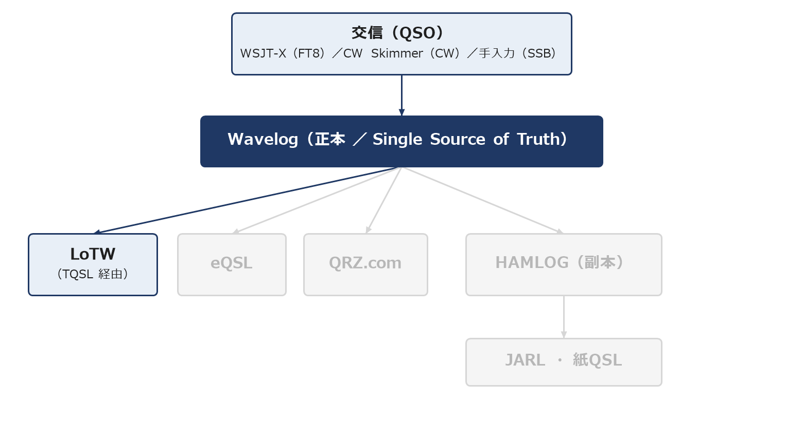
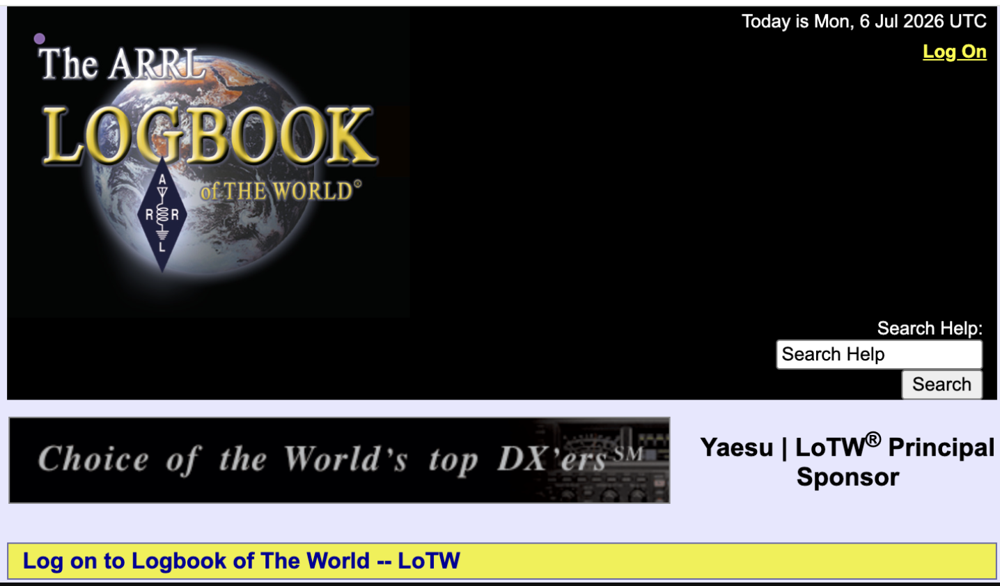
8.2 Station Location8.2 Station Location
使用するStation LocationはJL1EHQ_Oiso。大磯固定基地局・東京リモート局とも同一Station Locationを使用する。理由は、送信地点が常に大磯固定基地局であるためである。 The Station Location JL1EHQ_Oiso is used by both sites, because the transmitting site is always the Oiso Base Station.
8.3 TQSLと運用8.3 TQSL and Operation
TQSLは大磯固定基地局・東京リモート局の双方へインストールし、WavelogからLoTWアップロードを実施する。 TQSL is installed at both sites; uploads to LoTW are performed from Wavelog.
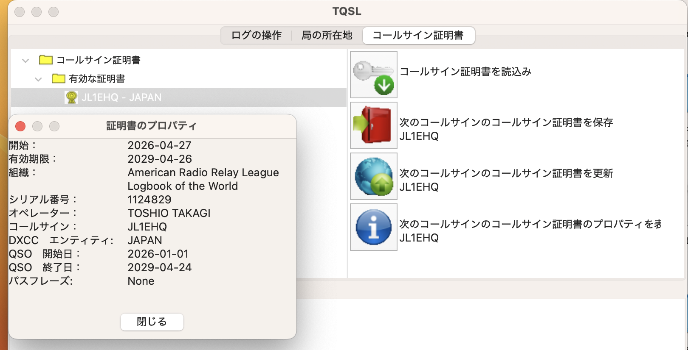
| モードMode | 運用Workflow |
|---|---|
| FT8 | 自動登録後アップロードUpload after automatic logging |
| CW | Wavelog登録後アップロードUpload after Wavelog entry |
| SSB | Wavelog登録後アップロードUpload after Wavelog entry |
第9章 eQSLChapter 9 — eQSLEQSL
9.1 基本方針9.1 Policy
eQSLはWavelogより送受信する。eQSLへはWavelogから直接連携する。 eQSL cards are sent and received from Wavelog, with direct integration.
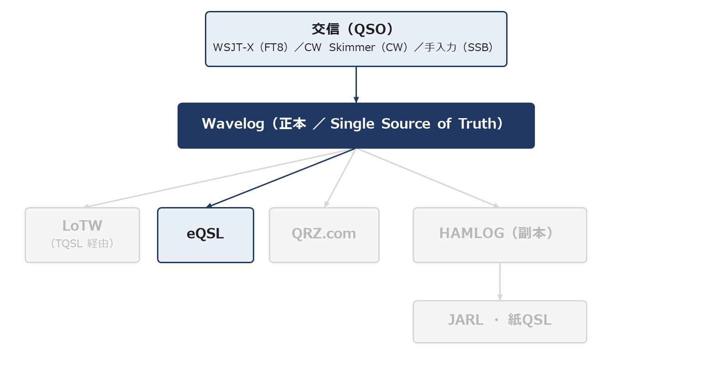
9.2 運用9.2 Workflow
| モードMode | 運用Workflow |
|---|---|
| FT8 | 自動Automatic |
| CW | Wavelog手動入力Manual entry in Wavelog |
| SSB | Wavelog手動入力Manual entry in Wavelog |
第10章 QRZ.com XMLChapter 10 — QRZ.com XMLQRZ.COM XML
10.1 目的10.1 Purpose
QRZ.com XMLを利用し、コールサイン情報を取得する。QRZ.comへはWavelogから直接連携する。 The QRZ.com XML service is used to look up callsign information, integrated directly from Wavelog.
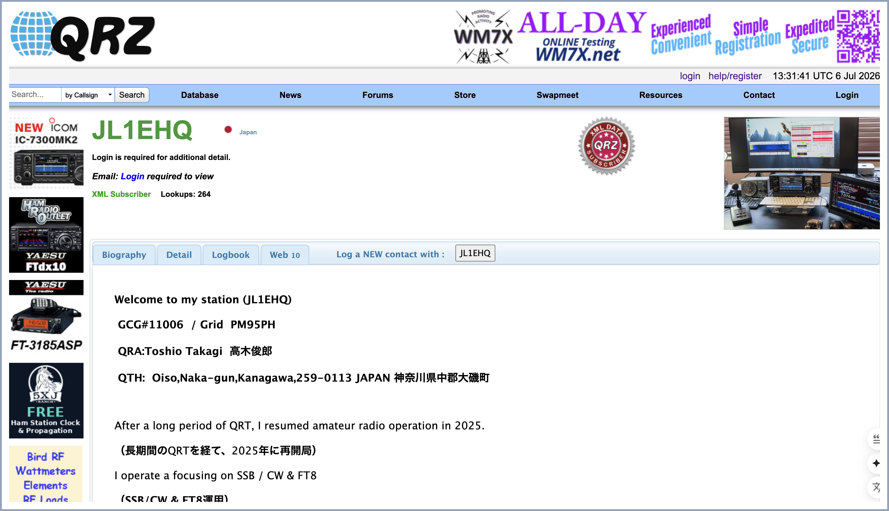
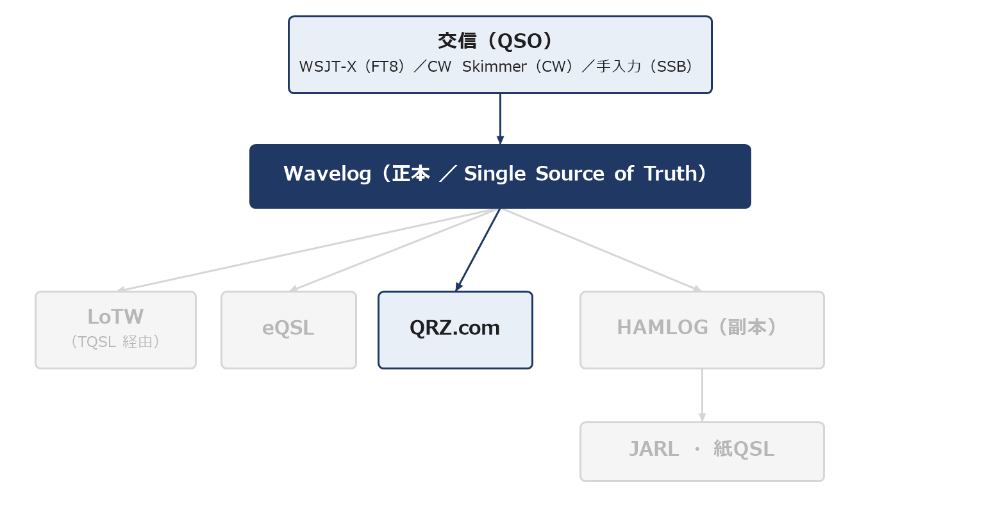
10.2 利用目的と運用10.2 Uses and Operation
- コールサイン情報取得（名前・QTH取得）Callsign lookups (name and QTH)
- ログ補完Log enrichment
Wavelogから利用し、大磯固定基地局・東京リモート局とも同一アカウントを使用する。 Used from Wavelog, with the same account at both sites.
第11章 HAMLOGChapter 11 — HAMLOGHAMLOG
11.1 目的・役割11.1 Purpose and Role
HAMLOGは国内運用専用システムとする。国内局管理・JARL管理・紙QSL管理・国内検索を担う。 HAMLOG is dedicated to domestic operation: managing Japanese stations, JARL affairs, paper QSLs and domestic lookups.
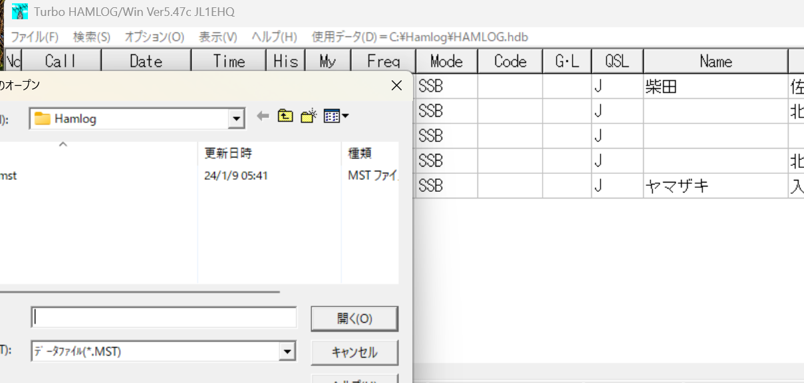
11.2 基本方針11.2 Policy
HAMLOGはマスターログではない。マスター（正本）はWavelogである。HAMLOGはWavelogの副本であり、Wavelogから自動同期される。LoTW・eQSL・QRZ.comはHAMLOGを経由せず、Wavelogから直接連携する。 HAMLOG is not the master log — Wavelog is. HAMLOG is a replica, synced automatically from Wavelog. LoTW, eQSL and QRZ.com never route through HAMLOG.
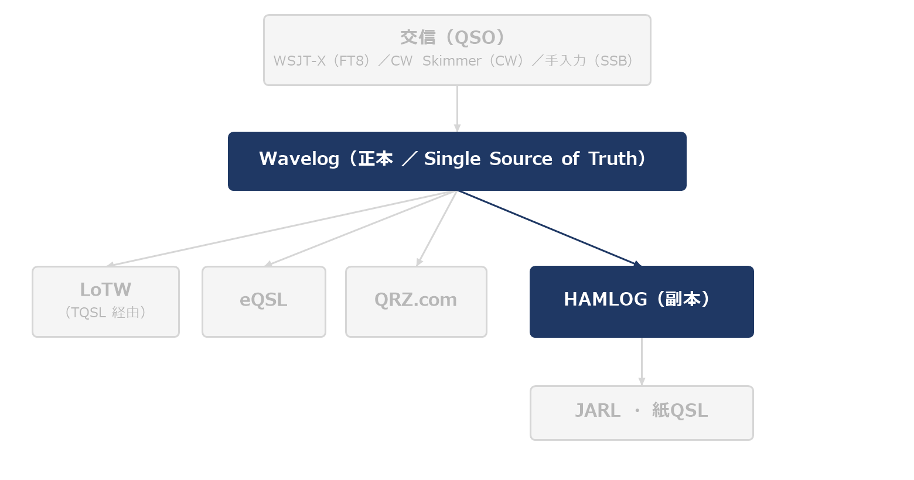
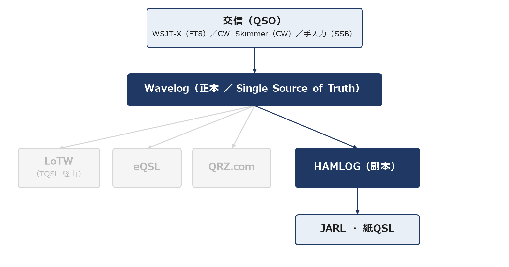
11.3 運用11.3 Operation
HAMLOGはThinkPad X13で管理する。大磯固定基地局・東京リモート局からはTailscale経由で必要時のみ利用する（情報閲覧）。通常運転ではX13を直接操作しない。 HAMLOG lives on the ThinkPad X13, accessed from the OBS/TRS via Tailscale only when needed (read-only reference). In normal operation the X13 is not touched directly.
第12章 JARL運用Chapter 12 — JARL OperationsJARL
12.1 目的12.1 Purpose
JARLに関する国内運用を効率化する。To streamline domestic operations related to JARL.
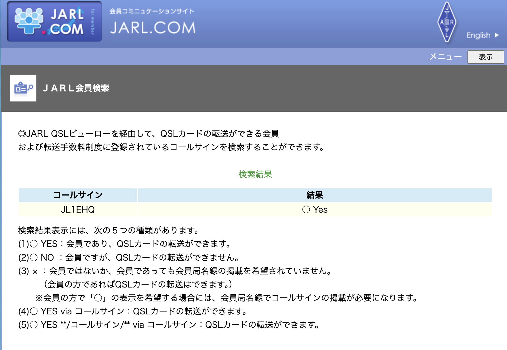
12.2 運用システムとデータフロー12.2 Systems and Data Flow
JARL運用はThinkPad X13上のHAMLOGを使用する。Wavelogはマスターログとして情報を提供する。 JARL work is done in HAMLOG on the ThinkPad X13, with Wavelog supplying the data as master log.
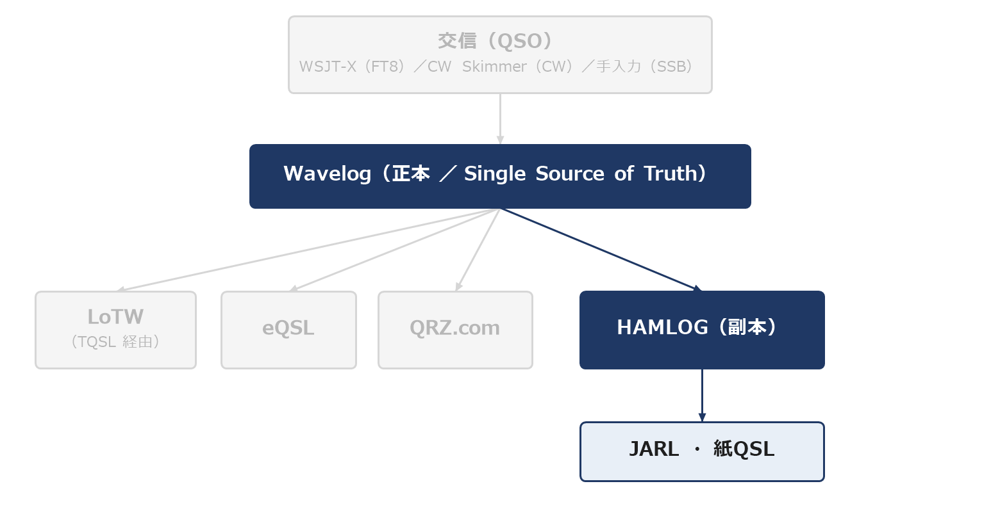
第13章 UPSシステムChapter 13 — UPS SystemUPS
13.1 目的13.1 Purpose
本システムの安定運用を実現し、停電・瞬停時にもシステムを保護する。大磯固定基地局・東京リモート局ともUPSを標準構成とする。 To ensure stable operation and protect the system through outages and momentary power drops. A UPS is standard equipment at both sites.
13.2 大磯固定基地局13.2 Oiso Base Station
保護対象：IC-7760／Windows Desktop／ネットワーク機器／アンテナ制御機器／周辺機器。大磯固定基地局のUPSは自動復帰システム（第2章 2.7）を保護し、24時間無人運転を支える。 Protected loads: IC-7760, Windows desktop, network equipment, antenna control gear and peripherals. The OBS UPS safeguards the auto-recovery system (Section 2.7), supporting 24-hour unattended operation.
13.3 東京リモート局13.3 Tokyo Remote Station
保護対象：Windows Desktop／IC-7760 リモートコンソール／ネットワーク機器／周辺機器。 Protected loads: Windows desktop, IC-7760 remote console, network equipment and peripherals.
第14章 AI（人工知能）エージェント（Version2.0）構想Chapter 14 — AI Agent Concept (Version 2.0)AI AGENTS
Version2.0では、Version1.0で完成した「身体（遠隔運用）」と「記憶（クラウドログ）」の土台の上に、AI（人工知能）エージェント群を実装する。クラウド上のWavelogに蓄積された全データ（交信記録・DXCC・伝搬・設備情報）をAIが学習・分析し、運用者を支援する「考える無線局」へと進化させる。 Version 2.0 deploys a team of AI agents on the foundation completed in Version 1.0 — the "body" (remote operation) and the "memory" (cloud logging). AI learns from and analyzes everything accumulated in Wavelog (QSO records, DXCC status, propagation, station data), evolving the station into a "thinking station" that supports its operator.
すべてのエージェントは統括AIオペレーター（Chief Cyber Operator）が束ね、運用者へは整理された提案として届ける。ただし、本システムの中心思想は変わらない――情報の整理・分析・提案はAIが担い、最終判断と交信そのものは、常に運用者（人間）が行う。 All agents are coordinated by a Chief Cyber Operator, which delivers curated proposals to the operator. The core philosophy is unchanged: AI organizes, analyzes and proposes — the final decision, and every QSO, always belong to the human operator.
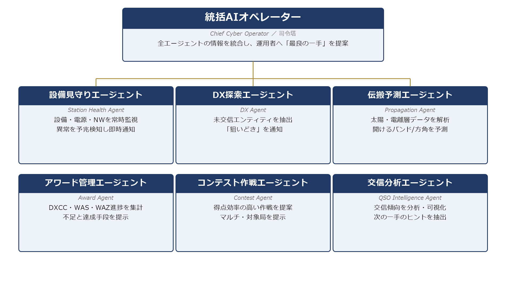
14.1 AIエージェント一覧14.1 Agent Lineup
| 日本語名称Name (JA) | 英語名（コード名）Code name | 主な役割Primary role |
|---|---|---|
| 統括AIオペレーターChief AI Operator | Chief Cyber Operator | 全エージェントの統括・最終提案Coordinates all agents; final proposals |
| 設備見守りエージェントStation Health Agent | Station Health Agent | 設備・電源・ネットワークの監視Monitors equipment, power and network |
| DX探索エージェントDX Agent | DX Agent | 珍しい局・未交信エンティティの探索Hunts rare stations and unworked entities |
| 伝搬予測エージェントPropagation Agent | Propagation Agent | 電波伝搬の予測Forecasts radio propagation |
| アワード管理エージェントAward Agent | Award Agent | DXCC・WAS・WAZ等の進捗管理Tracks DXCC, WAS, WAZ progress |
| コンテスト作戦エージェントContest Agent | Contest Agent | コンテスト運用の作戦支援Contest strategy support |
| 交信分析エージェントQSO Intelligence Agent | QSO Intelligence Agent | 交信記録の分析・提案Analyzes QSO records and proposes actions |
14.2 各エージェントの構想14.2 Agent Concepts
統括AIオペレーター（Chief Cyber Operator） — 無線局全体を見守る「司令塔」。各エージェントが出した情報を一つに束ね、運用者にとって「いま最も有益な一手」を厳選して提案する。 Chief Cyber Operator — the "command tower" watching over the whole station, weaving each agent's findings into the single most valuable next move for the operator.
- 各エージェントの分析結果を統合し、優先順位をつけて通知するIntegrates the agents' analyses and notifies with priorities assigned
- 無線局全体の状態（設備・伝搬・ログ・QSL）を俯瞰し、見落としを防ぐOversees the whole station — equipment, propagation, logs, QSLs — preventing oversights
- 運用者の好みや運用スタイルを学習し、提案を個別に最適化するLearns the operator's preferences and style, personalizing its proposals
- 「今夜ヨーロッパは狙えるか」など、自然な言葉での対話に応えるAnswers natural-language questions like "Can I work Europe tonight?"
設備見守りエージェント（Station Health Agent） — 無人運転を支える「保守の番人」。大磯固定基地局・東京リモート局の機器を常時監視し、トラブルを未然に防ぐ。 Station Health Agent — the "guardian of maintenance" behind unattended operation, continuously monitoring both sites to stop trouble before it starts.
- IC-7760・PC・ネットワーク・UPS・室温などを24時間監視するMonitors the IC-7760, PCs, network, UPS and room temperature 24/7
- 停電・VPN切断・SWR異常などの予兆を検知し、即時に通知するDetects early signs of outages, VPN drops or SWR anomalies and alerts instantly
- 自動復帰システムと連携し、復旧手順の提示や一部の自動復旧を行うWorks with the auto-recovery system, presenting recovery steps and automating parts of them
- 稼働ログを蓄積し、メンテナンスの最適な時期を予測するAccumulates operating logs to predict the best maintenance timing
DX探索エージェント（DX Agent） — 世界への「水先案内人」。膨大なスポット情報の中から、自分に必要な好機だけを抜き出す。 DX Agent — the "pilot" to the world, extracting only the opportunities that matter from a flood of spots.
- DXクラスター等のスポット情報を収集し、未交信エンティティを自動抽出するCollects DX-cluster spots and automatically extracts unworked entities
- 「いま・このバンド・この方角でニューが狙える」好機を通知するAlerts to chances of a new one — now, on this band, in this direction
- DXペディションの予定を取り込み、運用開始前にアラートを出すIngests DXpedition schedules and alerts before operations begin
- 自局のログと突き合わせ、本当に必要な局だけを厳選して提示するCross-checks against the station log to present only truly needed stations
伝搬予測エージェント（Propagation Agent） — 見えない電波の道を読む「気象予報士」。いつ・どこが開けるかを先読みする。 Propagation Agent — the "weather forecaster" of invisible radio paths, predicting when and where the bands will open.
- 太陽活動（SFI・黒点数・A/K指数）と電離層の状態を取り込むIngests solar activity (SFI, sunspots, A/K indices) and ionospheric conditions
- 「何時に・どのバンドで・どの方角が開くか」を時間帯マップで提示するPresents time-of-day maps of which band opens where, and when
- 自局の過去実績を学習し、自分のアンテナでの現実的な飛びを予測するLearns from the station's own history to predict realistic reach with its antennas
- グレーライン・MUF等を考慮し、最も有利な運用時間帯を提案するAccounts for grey-line and MUF to propose the most advantageous operating windows
アワード管理エージェント（Award Agent） — 達成への「伴走者」。各種アワードの進捗を可視化し、ゴールまでの道筋を示す。 Award Agent — the "running mate" toward achievement, visualizing award progress and the path to each goal.
- DXCC・WAS・WAZ・JCC/JCG等の進捗を自動集計し、可視化するAutomatically tallies and visualizes DXCC, WAS, WAZ, JCC/JCG progress
- 「あと何が必要か」を一覧化し、不足しているエンティティを提示するLists exactly what remains, surfacing missing entities
- DX探索・伝搬予測と連携し、不足分を効率よく埋める機会を提案するTeams up with the DX and Propagation agents to propose efficient chances to fill the gaps
- 申請に必要なQSL・証明の充足状況をチェックするChecks whether the QSLs and confirmations needed for applications are in hand
コンテスト作戦エージェント（Contest Agent） — 勝つための「参謀」。ルールを読み解き、得点効率の高い戦い方を提案する。 Contest Agent — the "chief of staff" for winning, decoding the rules and proposing the highest-scoring way to fight.
- コンテストカレンダーを管理し、参加候補を事前に通知するManages the contest calendar and flags candidate events in advance
- ルールと得点体系を解析し、バンド・時間配分の作戦を提案するAnalyzes rules and scoring to propose band and time-allocation strategy
- 運用中はマルチ・重複を判定し、次に狙うべき局・マルチを提示するDuring the contest, judges multipliers and dupes, pointing to the next target
- 終了後はログを点検し、提出フォーマットへの変換を支援するAfterwards, checks the log and assists conversion to the submission format
交信分析エージェント（QSO Intelligence Agent） — 経験を知恵に変える「分析官」。蓄積したログから、次の一手のヒントを引き出す。 QSO Intelligence Agent — the "analyst" that turns experience into wisdom, mining the accumulated log for hints toward the next move.
- 全交信記録を分析し、運用傾向（得意バンド・時間帯・地域）を可視化するAnalyzes every QSO to visualize operating tendencies — strong bands, hours, regions
- 手薄なエリアや伸ばせるアワードなど「次の一手」を抽出するExtracts the "next move": under-served areas, awards within reach
- QSL（LoTW・eQSL・紙）の回収状況を分析し、フォロー先を提案するAnalyzes QSL returns (LoTW, eQSL, paper) and suggests where to follow up
- 長期の成長を記録し、振り返りのレポートを生成するRecords long-term growth and generates retrospective reports
14.3 基本思想14.3 Philosophy
これらのエージェントは、いずれも「人の代わりに無線をするAI」ではない。情報の整理・分析・提案に徹し、運用の主役は常に人間である。 None of these agents is an "AI that does radio instead of a human." They confine themselves to organizing, analyzing and proposing — the human is always the protagonist.
プロフィールProfilePROFILE
髙木 俊郎（たかぎ・としお） コールサイン JL1EHQToshio Takagi — Callsign JL1EHQ
株式会社アルファTKG 代表取締役会長。電気通信大学を卒業後、株式会社アマダに入社。37年にわたり販売畑一筋。世界中の工場の現場を歩き、海外本部長、専務取締役を歴任。その後、株式会社アルファTKGを創業し、13年になる。 Founder and Chairman of alfaTKG Co., Ltd. After graduating from the University of Electro-Communications, he joined AMADA Co., Ltd., devoting 37 years to sales — walking factory floors around the world, serving as Head of Overseas Operations and Senior Managing Director. He then founded alfaTKG, now in its 13th year.
「機械・電気・ソフトウェア」――いまや、この三つが、人生のすべてであるが、そのきっかけとなったのが、少年の日に出会った、アマチュア無線だった。 Machines, electronics, software — today these three are his whole life, and the spark for all of them was amateur radio, encountered as a boy.
少年時代を長野県長野市で過ごし、小学六年生のとき、トリオの組み立てキット――受信機 9R-59 と送信機 TX-88A――を自分で組み上げ、わずか10ワットの電波で、初めてアメリカ東海岸の局と交信する。その日の胸の高鳴りが、その後の人生を、決定づけた。同じころ、第二級アマチュア無線技士の資格を取得。当時授かったコールサイン JA0DVN は、いまも移動局として大切に使い続けている。 He grew up in Nagano City. In sixth grade he hand-built Trio kits — the 9R-59 receiver and TX-88A transmitter — and with a mere 10 watts made his first contact with a station on the US East Coast. The pounding of his heart that day decided the rest of his life. Around the same time he earned his 2nd-Class Amateur Radio Operator license; the callsign he received then, JA0DVN, is still cherished and used as his portable station today.
近年、最新型無線機アイコム IC-7760 の登場によって、遠隔操作の時代の到来を知り、神奈川県・大磯の自宅に構築した HF200W 固定局を、東京・日本橋から遠隔操作で運用する『遠隔操作無線システム』を構築。近年めざましく進歩する AI（人工知能）が、アマチュア無線にもたらす〈衝撃〉を、自らの手で実践すべく、いまも挑み続けている。 With the arrival of ICOM's flagship IC-7760 he saw that the age of remote operation had come, and built this remote-controlled radio system: a 200W HF fixed station at his Oiso home, operated from Nihonbashi, Tokyo. He continues to challenge himself, testing with his own hands the impact that rapidly advancing AI is bringing to amateur radio.
東京リモート局：東京都日本橋本町 大磯固定基地局：神奈川県中郡大磯町 email：tt2833 (at) icloud.com Tokyo Remote Station: Nihonbashi-Honcho, Tokyo ／ Oiso Base Station: Oiso-machi, Naka-gun, Kanagawa ／ email: tt2833 (at) icloud.com